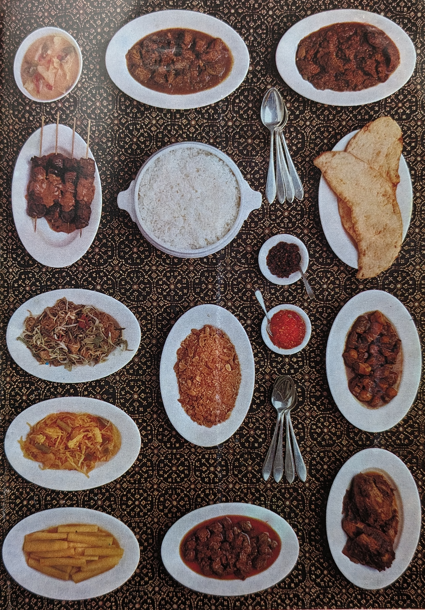

Rijsttafelen (1970) van Lia Warani
De inleiding van deze klassieker, wat eigenlijk gewoon Nederlands-Indisch cultureel erfgoed is.
Inleiding
Toen ik in 1960 voorgoed naar Nederland kwam, begreep ik al gauw dat het ondoenlijk was om de Indische rijsttafel op de traditionele manier te bereiden; het zou te veel tijd kosten en de gerechten moesten tenslotte aangepast worden aan de hier verkrijgbare groenten, kruiden en fruit. Na veel ge-experimenteer is het me wonderwel gelukt, de gerechten die typisch bij de Indische rijsttafel horen in een minimum van tijd te bereiden. De smaak stelt fijnproevers tevreden en verschilt hoegenaamd niet van die van onze ‘kokki bitjah’ of wel de keukenprinses van Indië.
Dit kookboekje is samengesteld aan de hand van oude recepten uit familiebezit. De Indische huisvrouw, bekend met de traditionele wijze van koken, zal ongetwijfeld aan deze in vele opzichten gewijzigde en op eigen initiatief veranderde recepten, veel plezier beleven. Maar vooral de Hollandse huisvrouw met het valse schrikbeeld voor ogen van ‘die ingewikkelde Indische gerechten, die uren bereidingstijd vergen’ zal uiteindelijk moeten concluderen, dat ‘Indisch koken’ niet zo moeilijk is als het lijkt.
Voor haar schreef ik dit boekje, met de bedoeling om de huisvrouw van ‘nu’ in de gelegenheid te stellen zonder al te veel hoofdbrekens en vooral niet ten koste van al te veel tijd, een rijsttafel te maken waarbij je je vingers opeet.
Er zijn richtlijnen in opgenomen voor het combineren van bepaalde gerechten. Bijvoorbeeld welke gerechten bij welke sajoers (groenten-vlees combinaties) horen en hoe men met één sajoer en twee bijgerechten, een atjarsoort en wat kroepoek - reeds een heerlijke ‘kleine’ rijsttafel kan maken, die echt Indisch smaakt, dus niet naar wat men vaak in restaurants krijgt voorgeschoteld, de goede niet te na gesproken.
De doorgewinterde huisvrouw-de Indische wel te verstaan-zal in de recepten vaak de kemirie (soort noot) of goeladjawa (Javaanse suiker) missen. Dat komt omdat deze twee ingrediënten niet of zelden bij de hand zijn, dan wel moeilijk verkrijgbaar.
Ook het theelepeltje asem, doet misschien vreemd aan, maar hiermee wordt de keukentamarinde bedoeld, die in jampotten te koop is en dus niet de asem in gedroogde vorm.
De recepten zijn alle bedoeld voor vier personen. Kruiden, ingrediënten, vlees, vis of kip zijn uiteraard hierop afgestemd.
Ik hoop van harte dat deze door mij zelf beproefde recepten, die geheel of gedeeltelijk afwijken van de vaak tijdverslindende traditionele recepten die men in vele oude, maar helaas ook nieuwe kookboeken aantreft, een prettige en smaakvolle verandering zullen betekenen in de dagelijkse kost.
Veel succes!
Herfst 1970, Lia Warani
Indische kruiden en produkten
- Asem - tamarinde ontdaan van de pit (in plakjes in gedroogde vorm. verkrijgbaar; ook wel in potten als een soort gelei onder de naam van keukentamarinde)
- Bawang Bombay - gewone uien
- Bawang merah - sjalotten
- Bawang poetih - knoflook
- Daon bawang - Sla-uien
- Daon djeroekpoeroet - een soort citroenblad
- Daon salam - een soort laurierblad
- Djahé - gember (vers, ingemaakt of in poedervorm) Djinten-komijn
- Djamoer koeping -Chinese champignons in gedroogde vorm
- Goela djawa - Javaanse suiker
- Katjangtanah - aardnoot, pinda
- Kemirie - soort noot, soort amandel
- Kentjoer - wortelsoort, met een bepaalde sterke geur
- Ketoembar - korianderzaad
- Koenir of koenjit - wortelstok van de Kurkumaplant, oranje-geel van kleur
- Keloewek - nootsoort, harde schil, met zwarte, vrij zachte inhoud
- Ketjap - sojabonensaus
- Laos of lankoeas - gemberachtige wortelstok (vers of in poeder- vorm)
- Laksa - fijne glazige Chinese vermicelli
- Lombok - Spaanse peper (rood en ook groen van kleur)
- Lombok rawit - hele kleine Spaanse pepers, scherp van smaak
- Pala - nootmuskaat (zowel vers als in poedervorm)
- Peteh - de z.g. stinkboon, groen van kleur (vers of ingemaakt)
- Peper - zwarte en ook witte peper in korrel- of poedervorm
- Reboeng -jonge bamboespruiten (in blik geconserveerd)
- Santen - klapper- of kokosmelk, in gecomprimeerde vorm
- Sereh - citroengras (vers of gedroogd)
- Sedep malam - witte nachtlelie in gedroogde vorm
- Tahoe - sojabonenmeel in platte zachte koeken
- Timpi of tempé - platte koeken van sojabonen
- Tauge of togé - ontkiemde kleine groene erwten
- Tjengkeh -kruidnagel (gedroogd of in poedervorm)
- Trassi - Vis- of garnalenpasta in gedroogde vorm, in plakken gesneden, voor velen met een onwelriekende geur, niettemin onontbeerlijk in de meeste Indische gerechten
- Temoe koentji - een geurende wortelsoort
- Kajoe manis - zoethout
Tips
Het verdient aanbeveling voor huisvrouwen die nogal vaak rijsttafel bereiden, dat de volgende hulpmiddelen in de keuken staan:
- Een rijststomer (in verschillende maten te koop).1
- Een wadjan, d.i. een bolvormige ijzeren braadpan die u eveneens kunt krijgen in diverse maten met de bijbehorende soetil (een platte
- ijzeren schep).
- Een steelpan, geschikt om gesneden uien, of de gekneusde, dan wel gesneden kruiden in te fruiten.
- Een paar ruime kookpannen.
- Een paar vuurvaste schotels; houten lepels.
De echte Indische huisvrouw heeft natuurlijk ook een tjobeh en oelekan in huis, maar het is voor de nog onervaren of experimenterende Hollandse huisvrouw niet een vereiste. Een tjobeh is een aarden of stenen platte schaal rond van vorm, waarin bijvoorbeeld uien, pepers en de kruiden gekneusd worden met de oelekan (stamper) die van hout of steen is gemaakt.
Het is een groot gemak om zoveel mogelijk van de kruiden of ingrediënten in voorraad te hebben, ze zijn veelal in gedroogde- of poedervorm te koop en nemen niet veel plaats in in uw keukenkast. Het is ook goed om altijd wat bouillonblokjes bij de hand te hebben, die veel gebruikt worden in plaats van zout. Gooi lege jampotten of anderszins niet weg, u kunt ze uitstekend gebruiken om de verse of gedroogde kruiden in te bewaren. Omdat Spaanse pepers niet altijd vers verkrijgbaar zijn, is een potje sambal in huis geen overbodige luxe.
Het is vooral zaak om zich precies te houden aan de wijze waarop de gerechten bereid worden, d.w.z. de volgorde en het bijvoegen der kruiden of ingrediënten precies zo, als aangegeven, omdat dit juist het geheim is van de smaak der spijzen en het ook in veler ogen ‘rare’ mespunt suiker het ’m doet.
Mocht het voorkomen dat bepaalde verse groenten die nodig zijn voor een te bereiden sajoer, niet te krijgen zijn, dan kan men diepvriesgroenten ook heel goed gebruiken. Groenten uit blik zijn vaak ‘te gaar’ hiervoor.
Nogmaals: houdt u zich precies aan de bereidingswijze van de gerechten; in de praktijk hebben vele huisvrouwen reeds ervaren, dat al gebruiken ze dezelfde kruiden, dezelfde hoeveelheid van dit of van dat, het resultaat bedroevend is, wanneer ze bijvoorbeeld het hele zaakje maar meteen door elkaar hutselen in de pan. Kijk dan niet verbaasd op, als manlief misprijzend konstateert, dat het hem precies is of hij een klap in zijn gezicht krijgt.
Gebruik bij het bereiden van de gerechten en sausen nooit de Chinese ketjap, die hoort nu eenmaal bij Chinees eten. Schaf u een flesje ketjap manis aan (zoete Indische ketjap).
Koop altijd gebakken trassi, verpakt in zakjes. Ze kan, mits goed afgesloten, heel lang bewaard blijven.
Bewaar verse kruiden nooit in gesloten potten, maar altijd op een droge koele plaats. Zijn de kruiden gedroogd, dan moeten ze natuurlijk wel afgesloten worden weggezet.
Goela djawa wordt meestal in rollen verkocht. Bewaar hem goed afgesloten op een koele, droge plaats om uitdrogen en hard worden te voorkomen.
Koop zo mogelijk kemirie-noten altijd geroosterd of gebakken. Ze blijven dan langer goed. Kunt u ze alleen vers krijgen dan moet u de noten in een wadjan - zonder olie-roosteren op middelgroot vuur, telkens met de soetil kerend, tot ze een bruin randje vertonen. Laat ze afkoelen en bewaar ze in een jampot.
Salam, djeroekpoeroetblaadjes en gedroogde laos moeten afgesloten bewaard worden. Kruidnagel, ketoembar en djinten eveneens.
Verse kruiden geven aan de gerechten natuurlijk altijd een betere smaak, maar als ze niet verkrijgbaar zijn kunt u natuurlijk altijd met kruiden in poedervorm volstaan.
De rijsttafel
In dit hoofdstuk zullen we het allereerst hebben over de rijsttafel in het algemeen en de rijsttafel in het bijzonder. De ’rijsttafel” (de Indische, wel te verstaan) heeft reeds een unieke plaats ingenomen in de culinaire geneugten van heel veel mensen uit vele delen van de wereld. Dit natuurlijk door de snelle ontwikkeling en vooruitgang der techniek in de laatste twintig jaren, waardoor tijd en afstand haast geen problemen meer vormen.
Men kan rustig aannemen, dat waar Indische restaurants verschijnen, de Indische rijsttafel zeer populair is.
Hoe is nu de indeling van een Indische rijsttafel? Men heeft om zo te zeggen de ‘zeer uitgebreide’, de ‘minder uitgebreide’, de ‘kleine’ en de rijsttafel van ‘alle dag’.
Een zeer uitgebreide’ rijsttafel die men in grote en gerenommeerde restaurants kan genieten bestaat vaak uit wel twintig gerechten.

Bijvoorbeeld:
- Sajoer lodeh
- sajoer kerrie
- saté met saté-saus
- ajam opor
- ajam besengèk
- boemboe roedjak vis
- boemboe atjar koening vis
- sambel goréng timpl
- sambel goréng oedang
- niet te vergeten de sambal oelek of sambal badjak en
- kroepoek of rempèjèk
Men serveert erbij:
- Sambel goréng telor
- sambel goréng kentang
- sambel goreng tahoe-togé
- sambel goréng ebbi
- sambel goreng boontjes of kool
- semoor vlees
- seroendeng
- atjar tjampoer
Er zijn natuurlijk andere variaties mogelijk, met de haast ontelbare gerechten die men bij de rijsttafel heeft.
Bij een ‘minder uitgebreide’ rijsttafel doet men het met een sajoer, vlees- en visgerecht en enkele sambal gorèngs minder.
Een ’kleine rijsttafel kan meestal volstaan met één sajoer, één vlees-, kip-, of visgerecht, één sambal goreng, wat atjar, sambal en kroepoek.
Bij de rijsttafel van ‘alledag’ is één sajoer met twee bijgerechten reeds voldoende; men kan natuurlijk kroepoek, sambal of verse komkommer erbij nemen naar believen.
We zullen de ‘bijzondere’ rijsttafel onder de loupe nemen. Bij verjaarsfeestjes of andere feestelijke gelegenheden maakt men bij voorkeur een ‘nassi koening’ of ‘nassi goerih’ klaar.
Nassi koening is gele rijst, geel gekleurd met koenir en gekookt in santen, met de bijbehorende kruiden.
Nassi goerih wordt ook met santen gekookt en verschillende kruiden. De recepten kunt u verderop in dit boekje vinden. Ook welke bijgerechten erbij horen.
Wil men al de rompslomp van het bereiden van nassi koening en nassi goerih echter vermijden, dan kan men bij de kruidenier of Indische speciaalzaken, deze soorten rijst in kartonnen verpakking krijgen, net als alle andere soorten van de gewone witte rijst.
Dan heeft men de alom bekende nassi goreng. Ook hiervan bestaan er verschillende recepten. Wij zullen het hier echter alleen maar hebben over het recept van mijn grootmoeder, moeder en onze onvolprezen ‘kokki bitjah’. Dus niet de ‘nassi gorèng’ die u meestal geserveerd krijgt in een restaurant met ham en een spiegelei, die natuurlijk best heerlijk kan smaken; maar een echte Indische nassi goreng maakt u met trassi!
Footnotes
Als u niet van kant-en-klaar pakken rijst houdt, ga dan met de rijststomer als volgt te werk: 500 gram rijst wassen en in een ruime pan opzetten met zoveel water, dat de rijst 2 cm onderstaat. Op zacht vuur aan de kook brengen, af en toe omroeren met een houten lepel. Als het vocht opgenomen is, de vlam uitdraaien en de pan met gesloten deksel enkele minuten laten staan. In de pan van de rijststomer zoveel water aan de kook brengen dat het tot de gaatjes reikt. De gekookte rijst in de gaatjespan overscheppen en verder gaar laten stomen.↩︎